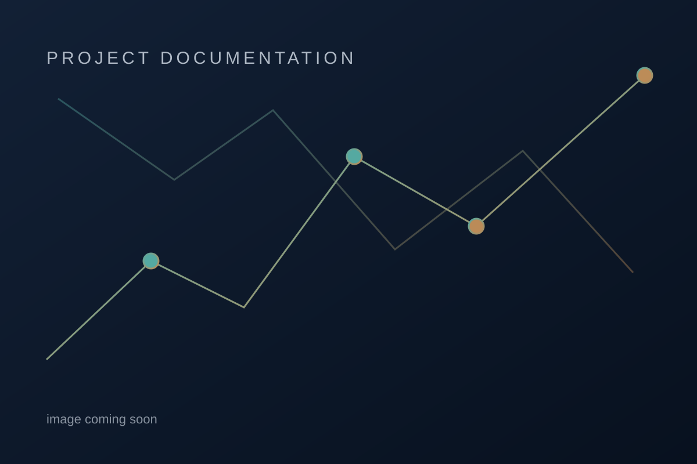

Der autonome Navi-Roboter
Entwicklung eines autonomen Roboters, der in einem digitalen Straßennetz den kürzesten Weg zu einem Ziel berechnet und diesen anschließend selbstständig befährt.
Projektübersicht
Ziel des Projekts ist die Entwicklung eines Algorithmus, welcher ein Straßennetz analysieren kann und den schnellsten beziehungsweise kürzesten Weg zwischen Start und Ziel findet. Anschließend soll ein Roboter diesen Weg autonom durchführen.

Die Projektidee
Die Idee entstand durch das Interesse an autonom fahrenden Robotern und der Frage, wie ein Roboter selbstständig Entscheidungen treffen kann. Dafür sollte ein System entwickelt werden, welches ein Straßennetz analysiert und den optimalen Weg berechnet.
Digitale Darstellung des Straßennetzes
Damit ein Computer ein Straßennetz analysieren kann, wurde es in einzelne Quadrate unterteilt. Jede Kreuzung, Straße und freie Fläche wird durch Koordinaten beschrieben.
Kreuzungen werden durch verschiedene Zahlen dargestellt, welche angeben, in welche Richtung eine Straße geöffnet ist.
Suche des kürzesten Weges
Der entwickelte Algorithmus untersucht verschiedene mögliche Wege zwischen Start und Ziel.
Bei Kreuzungen merkt sich das Programm bestimmte Positionen und kann später zu diesen Punkten zurückkehren, um weitere Wege zu überprüfen.
Umgang mit Kreuzungen
Bei mehreren möglichen Wegen werden die verschiedenen Möglichkeiten untersucht und miteinander verglichen.
Dadurch kann der Algorithmus feststellen, welcher Weg die wenigsten Schritte benötigt und somit der kürzeste ist.
Gleichzeitige Wegsuche
Eine verbesserte Variante des Programms verfolgt mehrere Wege gleichzeitig.
Ähnlich wie eine Ausbreitung in alle Richtungen werden mögliche Wege parallel untersucht. Der erste gefundene Zielweg ist dadurch automatisch der kürzeste.
Der autonome Roboter
Für die praktische Umsetzung wird ein Jetbot AI Kit mit Raspberry Pi verwendet.
Der Roboter kann über WLAN programmiert werden und erhält anschließend die berechneten Fahrbefehle, um den Weg autonom abzufahren.
Steuerung des Roboters
Das Programm übersetzt die berechneten Wege in einzelne Bewegungen: Vorwärts, Links, Rechts und Rückwärts.
Dabei wird die aktuelle Richtung des Roboters gespeichert und der benötigte Drehwinkel automatisch berechnet.
Ergebnisse
Der Roboter kann in einem definierten quadratischen Straßennetz den schnellsten Weg berechnen und anschließend abfahren.
Die verschiedenen Algorithmen zeigen, dass eine parallele Wegsuche schneller funktionieren kann als das vollständige Durchprobieren aller Möglichkeiten.
Ausblick und Verbesserungen
Eine zukünftige Verbesserung ist die Erweiterung auf komplexere Straßennetze mit unterschiedlichen Weglängen mithilfe des Dijkstra- Algorithmus.
Zusätzlich könnte die Kamera des Jetbots genutzt werden, um Objekte zu erkennen und Hindernissen automatisch auszuweichen.
Ergebnis
Das Projekt zeigt, wie Algorithmen, Programmierung und Robotik kombiniert werden können, um einen autonomen Roboter zu entwickeln. Der Roboter ist in der Lage, einen optimalen Weg zu berechnen und diesen selbstständig auszuführen.